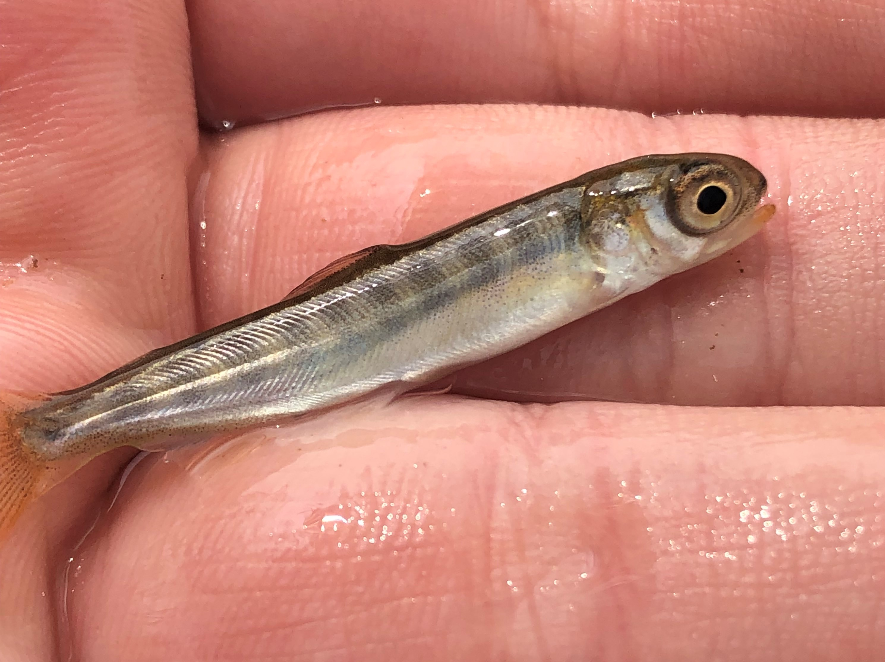
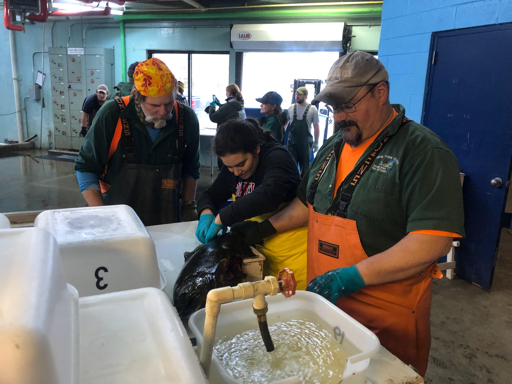

Research Topics
Multispecies Stock Assessments
.JPG) There is growing awareness that incorporating ecosystem interactions
directly into fisheries assessment models may improve estimates of
species dynamics and predictions of future sustainability by
incorporating the impact of ecological interactions on fishery
productivity and sustainability. In the Laurentian Great Lakes,
culturally and economically important recreational salmonine fisheries
are known to be dependent on the continued availability of their primary
prey item. In collaboration with regional managers and biologists, I
developed a novel multispecies statistical catch-at-age model for two
recreational fisheries (Chinook Salmon and Lake Trout) and their shared
primary prey item (Alewife) in Lake Ontario. The model includes three
population dynamics models linked together by predation and
bioenergetics sub-models. Thus, the model is able to jointly estimate
the dynamics of all three species and the amount of predation pressure
on the prey population.
There is growing awareness that incorporating ecosystem interactions
directly into fisheries assessment models may improve estimates of
species dynamics and predictions of future sustainability by
incorporating the impact of ecological interactions on fishery
productivity and sustainability. In the Laurentian Great Lakes,
culturally and economically important recreational salmonine fisheries
are known to be dependent on the continued availability of their primary
prey item. In collaboration with regional managers and biologists, I
developed a novel multispecies statistical catch-at-age model for two
recreational fisheries (Chinook Salmon and Lake Trout) and their shared
primary prey item (Alewife) in Lake Ontario. The model includes three
population dynamics models linked together by predation and
bioenergetics sub-models. Thus, the model is able to jointly estimate
the dynamics of all three species and the amount of predation pressure
on the prey population.
Recent Publications Fitzpatrick, K.B., Weidel, B.C., Connerton, M.J., Lantry, J.R., Holden, J.P., Yuille, M.J., Lantry, B., LaPan, S.R., Rudstam, L.G., Sullivan, P.J., Brenden, T.O., Sethi, S.A. 2022. Balancing prey availability and predator consumption: a multispecies stock assessment for Lake Ontario. Canadian Journal of Fisheries and Aquatic Sciences. https://doi.org/10.1139/cjfas-2021-0126
Risk-Assessment and Projections of Future Fishery Sustainability

Fisheries with tight linkages to other species through
predator-prey or other trophic dynamics, multispecies analyses can
provide critical insight into how management decisions and species
interactions can influence future fishery sustainability. I am
collaborating with Lake Ontario manages and biologists to use the
multispecies model to develop short-term forecasts of predator-prey
dynamics in response to varying ecological dynamics and management
actions (predator stocking). We found that changes in stocking practices
alone would be unable to substantially reduce prey mortality to reduce
the probability of declines in prey fish biomass. These forecasts serve
dual purposes of supporting current stocking decisions and highlighting
data needs to informing future management decision making. We found that
greater understanding of drivers Alewife and Chinook Salmon recruitment,
including potential predation interactions between age-0 alewife and
age-0 salmon, could improve our predictions of future predator-prey
dynamics.
Recent Publications Fitzpatrick, K.B., Weidel, B.C., Connerton, M.J., Lantry, J.R., Holden, J.P., Yuille, M.J., Lantry, B., LaPan, S.R., Rudstam, L.G., Sullivan, P.J., Brenden, T.O., Sethi, S.A. 2022. Balancing prey availability and predator consumption: a multispecies stock assessment for Lake Ontario. Canadian Journal of Fisheries and Aquatic Sciences. https://doi.org/10.1139/cjfas-2021-0126
Resource-Efficent Monitoring Programs

Limited financial and personnel resources are a reality for management
and conservation interests, and investment into one program often comes
at the cost of other potential management and monitoring efforts. Thus,
ideal monitoring programs are resource-efficent, inform management
decision making, and align with existing management protocols and
procedures. Since 2018, I have been Working with NYSDEC and OMNDMNRF to
develop a mass marking program for Chinook Salmon in Lake Ontario. I
have led the pilot analysis of parentage-based tagging – genetically
matching hatchery-raised offspring to their broodstock parents – in Lake
Ontario and found that parentage-based tagging could be both a highly
accurate and resource-efficient program for monitoring the dynamics of
hatchery-origin and naturally reproduced Chinook Salmon in Lake
Ontario.
Recent Publications Fitzpatrick, K.B., Overgaard
Therkildsen, N., Marcy-Quay, B., Borchardt-Wier, H.B., Sethi, S.A.
Discriminating between natural and stocked recruitment in inland
fisheries using parentage-based tagging. In review at Fisheries
Management and Ecology.
Spatial Ecology
While at the University of Oklahoma, my research evaluated the use of return-on-investment frameworks to guide freshwater connectivity restoration efforts. I created individual-based model to demonstrate how spatial optimization could maximize conservation outcomes for both stream-resident and migratory fisheries and, in collaboration with researchers from The Nature Conservancy and the University of Wisconsin-Madison, evaluated how indicator species could help guide restoration efforts in Great Lakes tributaries.
Recent Publications
Fitzpatrick, K.B., Moody, A.T., Milt, A., Herbert, M.E,
Khoury, M., Yacobson, E., Ross, J.A., Doran, P.J., Ferris, M.C.,
McIntyre, P.B., Neeson, T.M. 2021. Can indicator species guide
conservation investments to restore connectivity in Great Lakes
tributaries? Biodiversity and Conservation. 30: 165-182. https://doi.org/10.1007/s10531-020-02084-5
Neeson, T.M., Doran, P.J., Ferris, M.C., Fitzpatrick, K.B.,
Herbert, M., Khoury, M., Moody, A.T., Ross, J., Yacobson, E., McIntyre,
P.B. 2018. Conserving rare species can have high opportunity costs for
common species. Global Change Biology. 24(8): 3862-3872. https://doi.org/10.1111/gcb.14162
Fitzpatrick, K.B., Neeson, T.M. 2018. Aligning dam removals
and road culvert upgrades boosts conservation return-on-investment.
Ecological Modelling. 368: 198-204. https://doi.org/10.1016/j.ecolmodel.2017.11.018